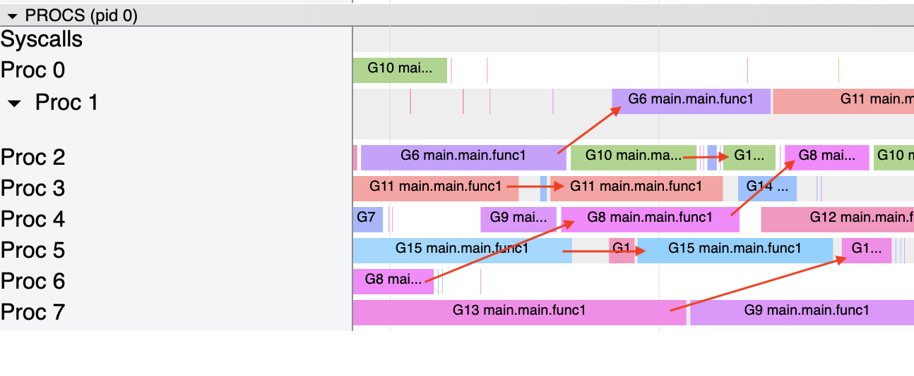
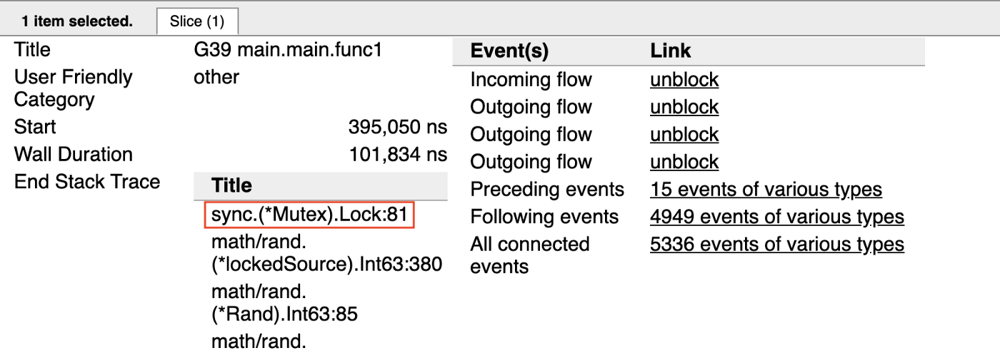
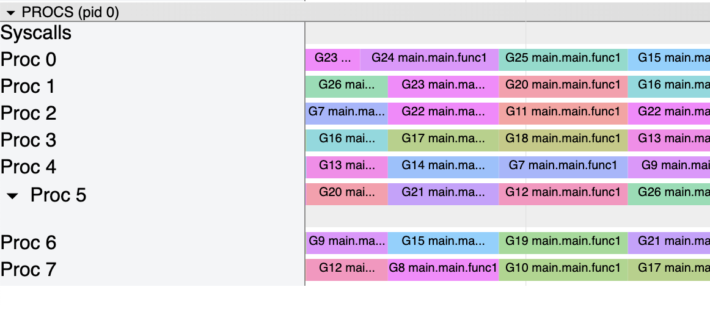
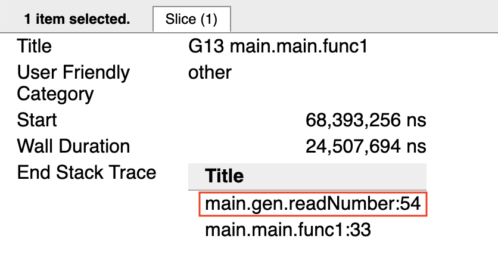
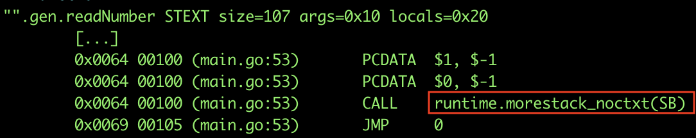
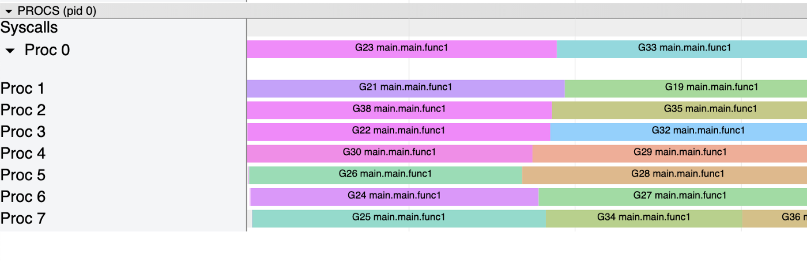
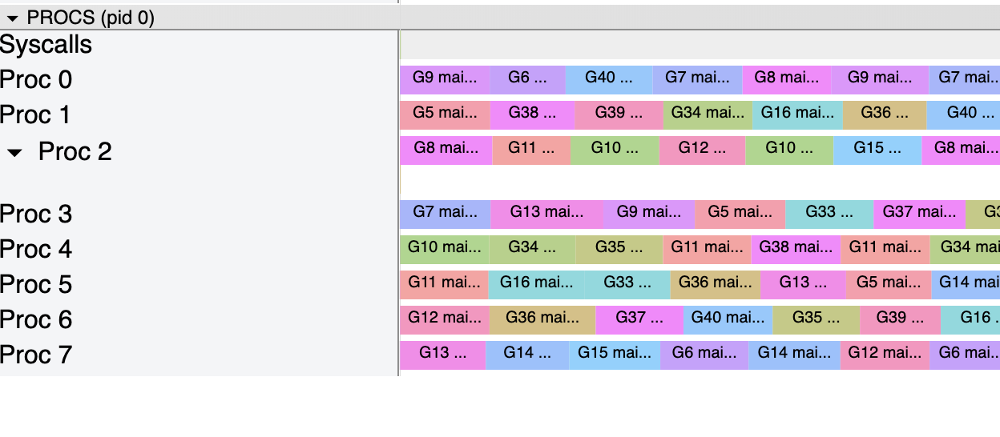
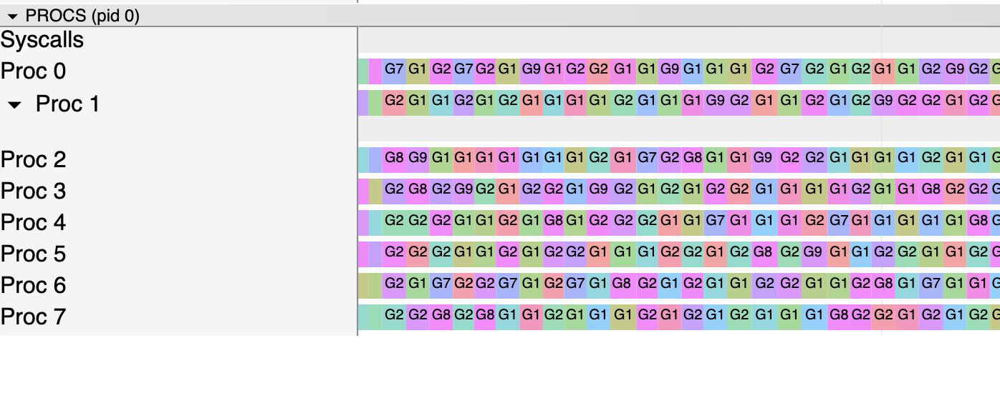
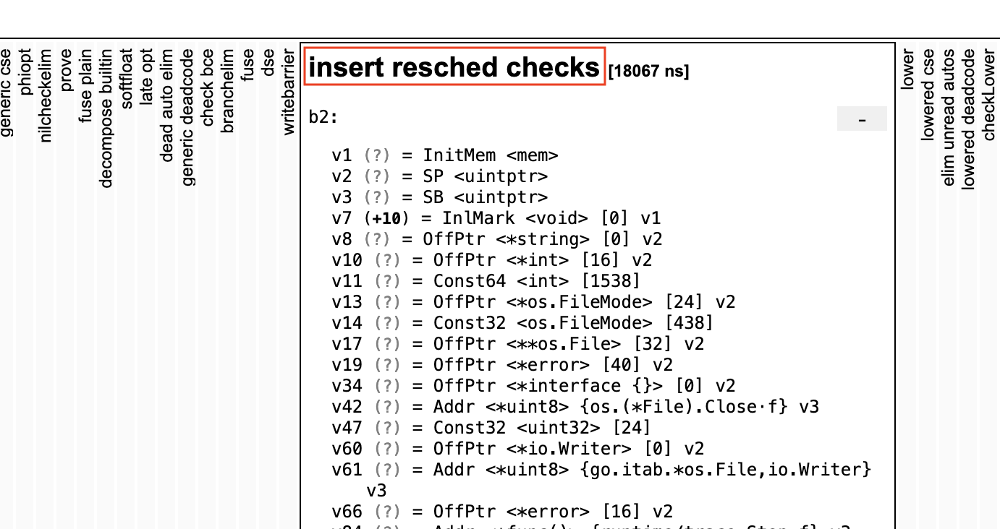

Go：Goroutine 与抢占机制
ℹ️本篇文章基于 Go 1.13.
Go 通过一个内部调度器（scheduler）来管理 goroutines。该调度器负责切换和调度多个 goroutine，保证每个 Goroutine 都可以得到执行时间。同时，为了执行这些切换调度操作，调度器需要一种抢占机制，用以抢占运行的 goroutine。
调度器与抢占机制
我们先看一个简单的例子, 以初步了解调度器是如何工作的：
为了方便阅读，本文的代码示例都是非原子操作
func main() {
var total int
var wg sync.WaitGroup
for i := 0; i < 10; i++ {
wg.Add(1)
Go func() {
for j := 0; j < 1000; j++ {
total += readNumber()
}
wg.Done()
}()
}
wg.Wait()
}
//go:noinline
func readNumber() int {
return rand.Intn(10)
}
下面我们来看一下 tracing 中记录的这段代码的运行状态：

从上图我们可以很清晰的看到调度器在不同处理器（processor）上，切换不同的 goroutine，以保证所有的 Goroutine 都可以得到运行时间。同时，为了给 goroutines 轮流分发运行时间，当 Goroutine 由于某些原因（如等待系统调用，block 在 channel，处于 sleeping 状态，或者等待互斥锁等）而停止，Go 会负责调度这些 goroutine。
那么，在我们这段数字生成器程序中，互斥锁（mutex）使得调度器更方便的为所有 goroutines 分配运行时间。我们可以从 tracing 中看到清晰的看到这一点：

当然，Go 也需要一种方式来停止一个 goroutine，尤其是这个 Goroutine 本身没有实现停止。我们称之为抢占（preemption）。 抢占允许调度器可以在 goroutines 直接切换。任何运行时间超过 10 毫秒的 Goroutine 都会被标记为“可抢占”状态。之后，抢占操作会在 Goroutine 的函数序言（function prologue）阶段执行。
下面，我们来改写一下之前的数字生成器程序代码，虽然改写后不能正常运行，但我们可以通过 tracing 来印证抢占操作执行过程：
func main() {
var total int
var wg sync.WaitGroup
for i := gen(0); i < 20; i++ {
wg.Add(1)
Go func(g gen) {
for j := 0; j < 1e7; j++ {
total += g.readNumber()
}
wg.Done()
}(i)
}
wg.Wait()
}
var generators [20]*rand.Rand
func init() {
for i := int64(0); i < 20; i++ {
generators[i] = rand.New(rand.NewSource(i).(rand.Source64))
}
}
type gen int
//go:noinline
func (g gen) readNumber() int {
return generators[int(g)].Intn(10)
}
我们来看一下这段代码的 tracing 情况：

我们从下面的细节可以看到，goroutine 在函数序言的时候，就已经被抢占：

我们通过这个例子的asm代码片段可以看到，这段检查动作是编译器自动加入的：

运行时（Runtime）通过在每个函数序言中插入指令的方式，来保证栈空间的持续运行。同时，这些函数序言中的指令也保证调度器的正常运行。
大部分情况，goroutine 会允许调度器来执行他们，但是如果一个循环没有任何函数调用，它是不会被调度器切换调度的，这个是一个典型的需要强制抢占的例子。
强制抢占
我们还是通过一个例子来看探究一个没有函数调用的循环是如何无法被调度的：
func main() {
var total int
var wg sync.WaitGroup
for i := 0; i < 20; i++ {
wg.Add(1)
Go func() {
for j := 0; j < 1e6; j++ {
total ++
}
wg.Done()
}()
}
wg.Wait()
}
由于没有函数调用，所有的 Goroutine 永远都不会被 block，所以调度器没有抢占这些 goroutine。我们来看一下 tracing 中的状态：（所有的 goroutines 没有被抢占）

为了解决这个问题，Go 提供了多种的解决办法：
通过调用
runtime.Gosched()强制调度器进行调度操作:for j := 0; j < 1e8; j++ { if j % 1e7 == 0 { runtime.Gosched() } total ++ }我们再看看一下上面这段程序的 tracing： 
通过 Go 的配置，使得循环可以被抢占。具体来说，我们可以通过
GOEXPERIMENT=preemptibleloops指令来重建 Go 的工具链（toolchain）或者在使用go build的时候，加上-gcflags -d=ssa/insert_resched_checks/on这个参数。我们回到之前那段没有被抢占的循环代码，通过修改配置，循环被抢占，下面是 tracing 状态： 
从下面这段代码对应的 SSA（Static Single Assignment）代码中可以看到，当我们通过配置激活了循环中的抢占机制，编译器会在 SSA 代码中加入一段
insert resched checks的pass： 这段
pass会新加入一系列指令，以调用调度器：关于 Go 编译器的实现原理，请参考我的另一篇文章 "Go: 编译器总览"
不过，介于在这种模式下，调度器可能会被强制触发多次，所以我们的代码效率会比没开启设置的时候低一些。下面是开启前后的对比情况：
name old time/op new time/op delta Loop-8 2.18s ± 2% 2.05s ± 1% -6.23%
后续改进
目前，调度器使用协作式抢占技术，这种技术在可以支持大部分使用场景。但是，在一些特殊场景中，它也会成为痛点所在。所以，一篇文章提出了另一种 “非协作式抢占”方案，旨在解决如下问题：
我提议 Go 转向使用 “非协作式抢占”的实现方式，使得 Goroutine 可以在必要的时候被抢占，而不再需要显示的做抢占检查。这样就可以解决抢占延迟的问题，也会减少运行时的开销。
同时这篇文章也对比了几种实现技术的利弊，预计这个“非协作式抢占”会在下一个 Go 版本中实现。
via: https://medium.com/a-journey-with-go/go-goroutine-and-preemption-d6bc2aa2f4b7
译者: SarahC